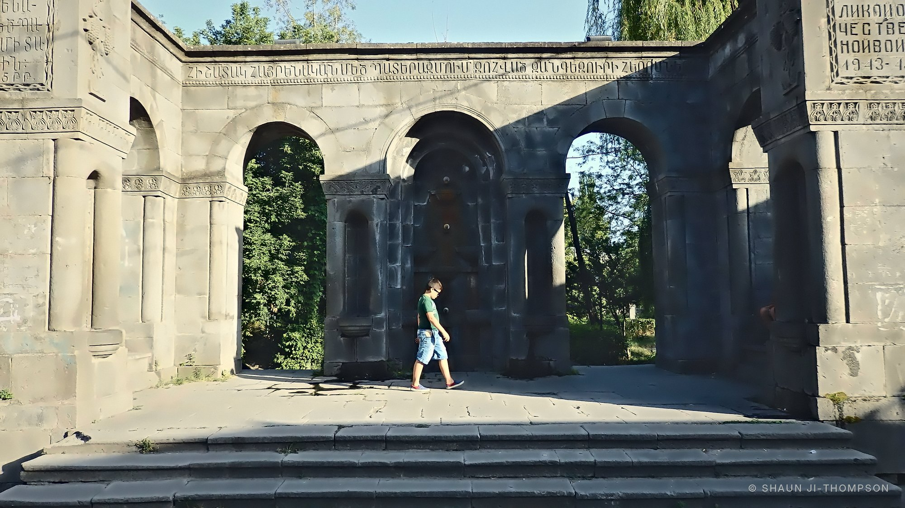

August 2015Tabriz to Tbilisi
Armenia
to the shores of Lake Sevan
Up through the gorges of Syunik, a detour east into Karabakh, then north over the Selim Pass to Lake Sevan, the high lake behind my score À la côte de la mer de Gegham.
- Stops
- 6
- Leg
- Tabriz to Tbilisi
- Route
- Kapan · Goris · Stepanakert / Khankendi · Selim Pass · Lake Sevan · Yerevan
- Photographs
- Shaun Ji-Thompson
The route
Black Sea to the Caspian Russia
Georgia
Turkey
Armenia
Azerbaijan
Iran
Black Sea
Caspian Sea
Kapan
Goris
Stepanakert /
Russia
Georgia
Turkey
Armenia
Azerbaijan
Iran
Black Sea
Caspian Sea
Kapan
Goris
Stepanakert /Khankendi Yerevan Tabriz Tbilisi Lake Sevan
COUNTRIES IN CAPITALS · Towns in plain type · Solid red: this entry · Faint red: the wider leg, Tabriz to Tbilisi · Routes sketched, not exact

The memorial fountain to the heroes of Zangezur who fell in the Second World War.
The score · Shaun Ji-Thompson · 2024
À la côte de la mer de Gegham
A piece about Lake Sevan, for wind band.